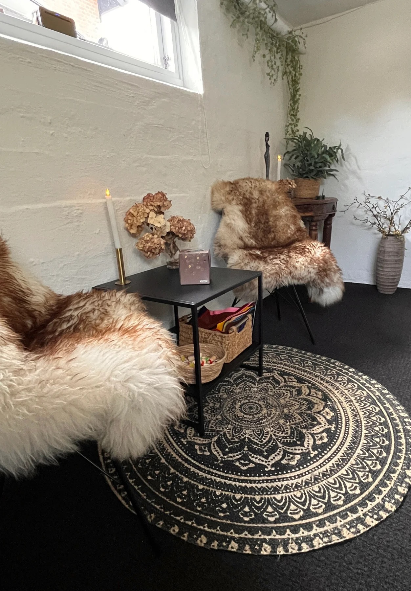

Systemisk Opstilling · Viborg
Når kroppen husker, hvad ordene har glemt. Jeg arbejder med arvede mønstre, familieloyalitet og generationel sorg — dér hvor livet mærkes.
Book en samtaleBenthe Johansen
Om Benthe
"Jeg arbejder dér, hvor det menneskelige system mødes — mellem det synlige og det usynlige, mellem ordene og det kroppen bærer."
Jeg er Master i Systemisk FamilieOpstilling fra ISFO — Institut for Systemisk Opstilling. I mit arbejde søger jeg klarhed, ro og bevægelse i det, der er kommet i ubalance: arvede mønstre, familiær loyalitet, sorg og bånd vi ikke vidste vi bar.
Min metode er blid og nænsom, men effekten kan være dyb og omvæltende. Sammen skaber vi et nyt indre billede — i kærlighedens orden — så du kan tage et skridt videre med større ro.
— Benthe Johansen
Tilbud
Vi udforsker din families historie og mønstre gennem figurer og filtstykker. Generationel sorg og arvet trauma får et indre billede — og dermed mulighed for forsoning.
1-til-1 hos BentheAndre deltagere fungerer som repræsentanter i din opstilling. Det er ofte i mødet med levende stedfortrædere, at de usynlige bånd bliver synlige.
Gruppe-sessionerI individuelle opstillinger med jer begge som observatører får I forståelse for hinandens oprindelsesdynamikker — og dermed et nyt fælles afsæt.
For parLokalet
Stearinlys, fåreskind, varme tekstiler og plads til at trække vejret. Lokalet i Viborg er indrettet, så krop og system kan finde ro — og så det, der trænger sig på, har plads til at vise sig.

Processen
Vi begynder med at tegne din families historie. Hvem er der, hvem mangler, hvilke begivenheder satte spor — det er kortet vi navigerer ud fra.
Figurer eller mennesker stilles op som et indre billede af dit system. Det, der har været usynligt, får pludselig form og plads i rummet.
Vi arbejder på gulv og ved bord, gennem generationer. Bevægelser, sætninger og blik forløser det, der har stået fast.
Til sidst skabes et nyt indre billede — i kærlighedens orden. Du tager det med dig som ressource, længe efter sessionen er slut.
Erfaringer
Efter en opstilling hos Benthe har jeg fået meget mere ro. Det var som om noget faldt på plads, jeg ikke selv vidste lå skævt. Hun har en helt særlig nænsomhed.
Jeg gik ind med arvet sorg fra min mors familie. Jeg gik ud med en følelse af at være sluppet — uden at noget var blevet glemt. Det er svært at sætte ord på, men det virker.
Ring til mig på 28 29 24 50 mellem 10–16, eller skriv en besked. Vi finder ud af, om opstilling er noget for dig.
Ring 28 29 24 50